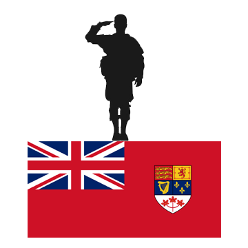
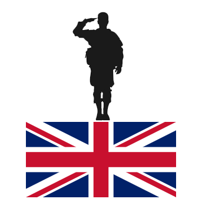
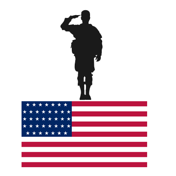

In aceasta pagina este vorba despre soldatii implicati in operatiune. Cele patru tari care au intiat-o au fost Canada, Statele Unite ale Americii si Regatul Unit

21,400 soldati canadieni
*Canada era inca sub ocupatie britanica

61,700 soldati britanici

21,400 soldati americani
23,400 soldati parasutisti
4,414 soldati Aliati au murit in timpul luptei
Sursa: historyextra.com